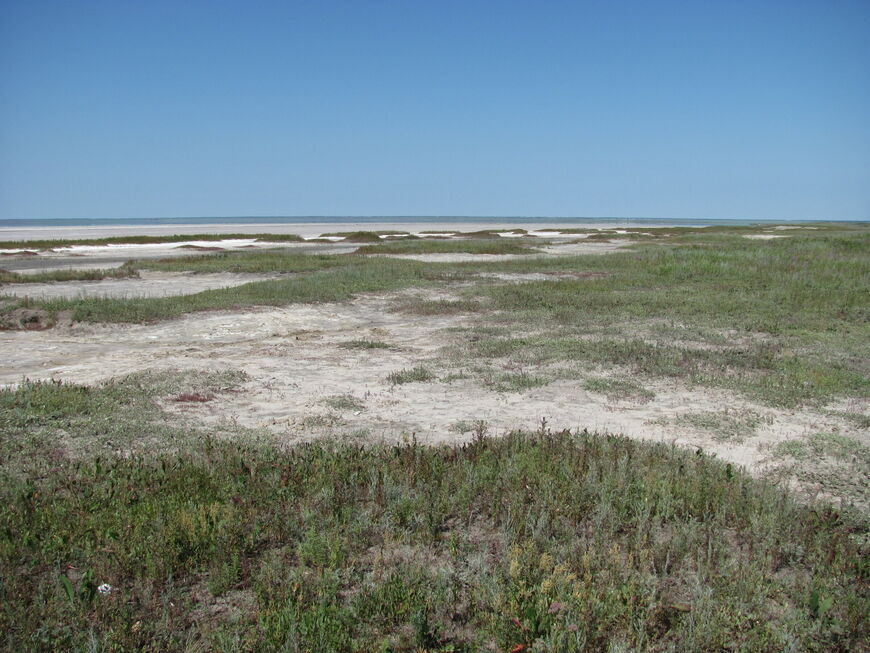

Озёра Омской Области


Озеро Эбейты
Расстояние от центра Омска - 220 км
Время в пути - 3-3,5 часа
Лучшее время для отдыха - лето
Особенности - наличие лечебных грязей, соляных кристаллов, бесплатный вход, разрешено купаться
В длину озеро Эбейты достигает почти 14 км, а в ширину — от 7 до 11,7 км. Площадь водоема непостоянна, и сегодня колеблется в пределах 90–113 кв. км. Его глубина в последние годы составляет от 0,6 до 3 метров. Озеро Эбейты на официальном уровне признано памятником природы. Его пейзажи необыкновенны: многие сравнивают территорию вокруг с путешествием в космос. К Мертвому морю ведут заросли красного солероса, которые ассоциируются с неизвестной планетой, испещренной мелкими кратерами водоемов. Вокруг озера много растений, которые занесены в Красную книгу России.

Отдых здесь довольно специфический. Вокруг озера нет баз отдыха, кафе и магазинов. Единственные развлечения — купание и обмазывание лечебными грязями. Это идеальное место для тех, кто любит уединение и тишину. К тому же здесь можно сделать потрясающие фотографии. Единственный минус отдыха на озере Эбейты — обилие кровососущих насекомых и ярко выраженный запах сероводорода.
Первое, ради чего стоит сюда приехать - это принятие грязевых ванн. Собирать грязь с собой для использования в личных целях никто не запрещает. Лечебная грязь озёра по своим свойствам превосходит знаменитые курорты Карачи, Саки и Ейск. Она имеет насыщенный сине-черный цвет, достаточно жирная и тягучая на ощупь, с резким запахом сероводорода. Но всегда есть минусы - лечебная грязь тяжело отмывается. Грязь с озера используется при лечении радикулита, артрита, кожных заболеваний, при травмах.
Также, здесь можно набрать немного соли. На озере можно встретить целые островки, созданные из кристаллов соли.
Так как зона озера относится к засушливым степям, то и растительности здесь не особо много. Береговая линия представляет собой солончаки, которые представляют отличный обзор на бескрайние просторы. Из растительности здесь могут выживать только галофиты. Они хорошо переносят почву с повышенным содержанием соли.